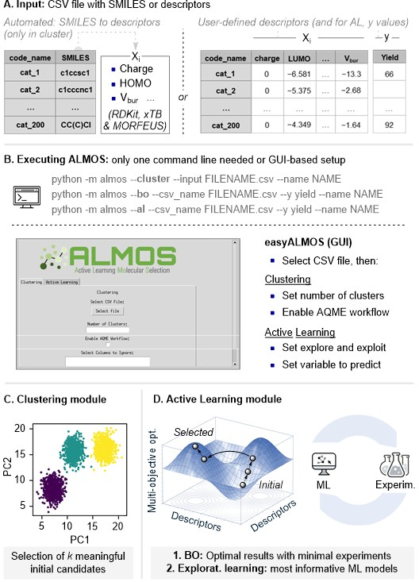

Welcome to ALMOS
ALMOS is an ensemble of automated machine learning workflows designed for chemical discovery, which can be run sequentially through a single command line or a graphical user interface. The program supports tasks such as candidate selection, optimization, and predictive model development. Comprehensive workflows have been designed to meet modern standards in data-driven chemistry, including:
Clustering module, which selects an initial, diverse, and representative subset of molecules or conditions from a descriptor space. The current CLUSTER workflow evaluates several clustering strategies internally and recommends a coverage-driven batch of points instead of relying on a user-defined number of clusters. Input data can be user-provided or automatically generated from SMILES using the AQME program.
Atomic and molecular descriptor generation from SMILES, including an RDKit conformer sampling and the generation of 200+ steric, electronic and structural descriptors using RDKit, xTB and MORFEUS. Requires the AQME program.
Active learning module, which builds robust and interpretable ML models through iterative retraining with ROBERT. The current AL workflow supports automatic strategy selection, explicit model-improvement mode, and hit-seeking mode through upper/lower confidence bound ranking.
The code has been designed for:
Inexperienced researchers in the field of ML. ALMOS provides intuitive workflows, a graphical user interface, and detailed visual outputs to facilitate the adoption of clustering and active learning techniques in chemical research. Minimal coding is required, and complete tutorials are available to guide users through real-world case studies.
Researchers and developers seeking reproducible and efficient ML workflows. ALMOS offers modular components that can be integrated into existing pipelines for candidate selection, model building, or optimization, with full control over inputs and strategies.
Overview of ALMOS

Quick Start
If you are new to ALMOS, the shortest route is usually:
Install the conda environment from
almos.yaml.Use
clusterto generate or evaluatebatch = 0.Use
alto run the next active learning cycle.Use
easyalmosif you prefer the GUI.
Typical commands:
curl -L -o almos.yaml https://raw.githubusercontent.com/MiguelMartzFdez/almos/master/install/almos.yaml
conda env create -f almos.yaml
conda activate almos
cluster --input EXAMPLE.csv --name Name
al --csv_name A_b0.csv --name Name --y target --n_exps 10
Start here:
[Install ALMOS](Install/installation.html)
[Use CLUSTER](Modules/cluster.html)
[Use Active Learning](Modules/al.html)
[Launch easyALMOS](Install/gui.html)
Installation and interface
How does ALMOS work?
- If you use the AL module, please cite the following paper:
Dalmau, D.; Alegre Requena, J. V. ROBERT: Bridging the Gap between Machine Learning and Chemistry. Wiley Interdiscip. Rev. Comput. Mol. Sci. 2024, 14, e1733.
- If you use the BO module , please cite the following paper:
Jose Antonio Garrido Torres, Sii Hong Lau, Pranay Anchuri, Jason M. Stevens, Jose E. Tabora, Jun Li, Alina Borovika, Ryan P. Adams, and Abigail G. Doyle. Journal of the American Chemical Society 2022 144 (43), 19999-20007.
- If you use AQME, please include this citation:
Alegre-Requena, J. V.; Sowndarya, S.; Pérez-Soto, R.; Alturaifi, T.; Paton, R. AQME: Automated Quantum Mechanical Environments for Researchers and Educators. Wiley Interdiscip. Rev. Comput. Mol. Sci. 2023, 13, e1663. (DOI: 10.1002/wcms.1663)
Additionally, please include the corresponding references for the following programs:
Technical Details
API Reference